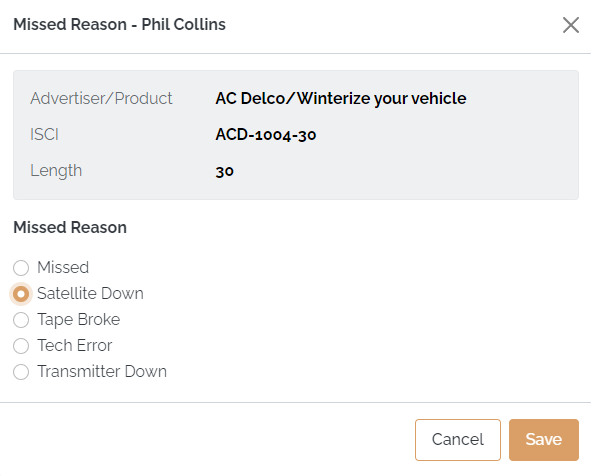
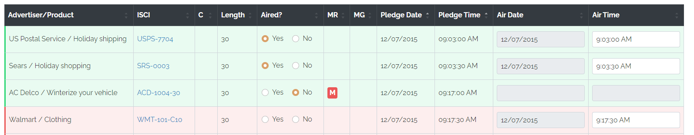
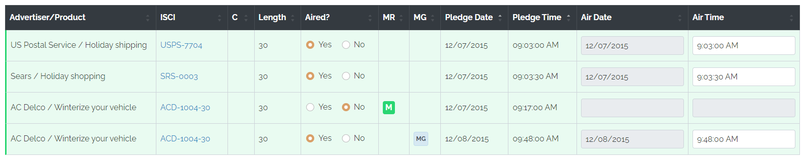
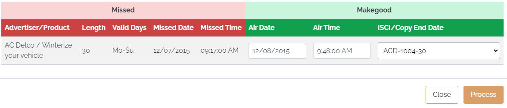
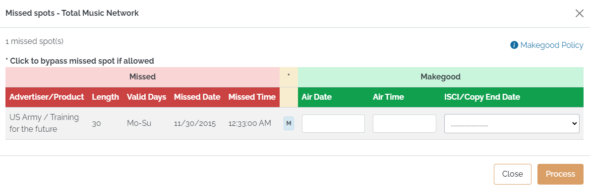
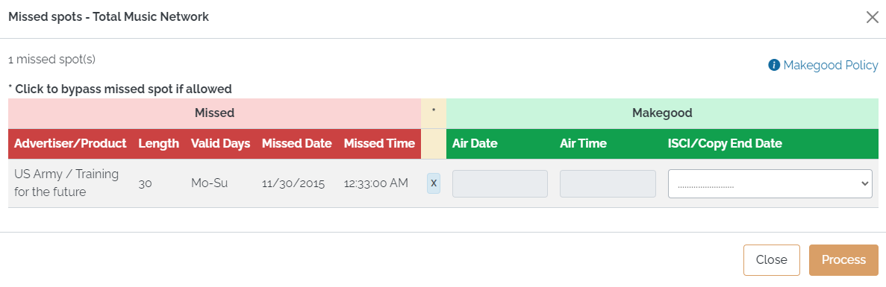
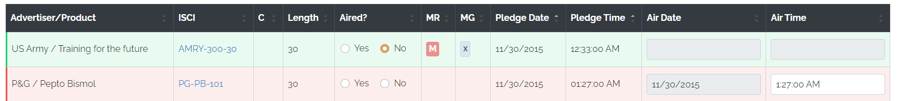
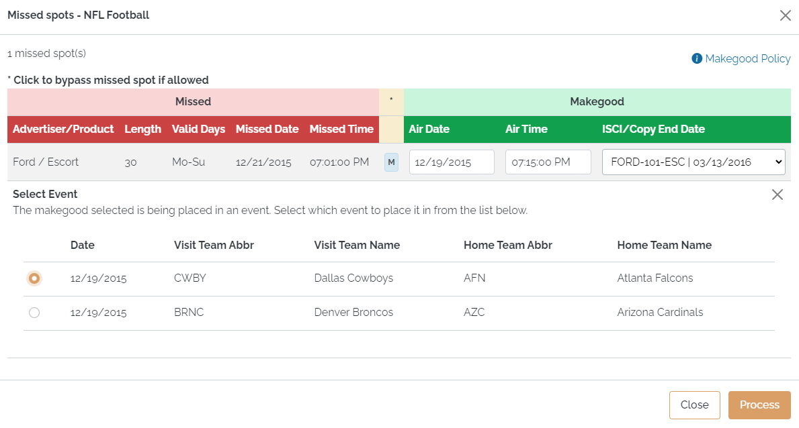

Missed Spots and Web Makegoods
Spots can be marked as missed by selecting the "No" radio button from the "Aired?" column. If Missed Reasons are required, the user must pick a missed reason from the list of missed reasons, and then press Save.

Spots that have been missed are indicated with a letter "M" in the "MR" (Missed Reason) field. If the missed spot has not been made good, a red "M" icon will be used, as shown below.

The missed reason can be changed by pressing the "M" icon and selecting a different missed reason.
When a missed spot has been made good, the color of the "M" icon changes from red to green to indicate that it has been made good, as shown in the image below.

You can hold the mouse pointer over a green "M" icon to see the makegood date and time. Makegood spots are indicated with an "MG" icon in the "MG" (Makegood) field, as shown in the picture above.
The "MG" icon can be pressed to bring up a pop up screen with information about the makegood and which can be used to edit the makegood air date and time by simply typing in the changed air date and/or time and then pressing Process to save the change.

The makegood air time can also be manually edited in the Air Time field on the main Posting Screen itself.
Creating Makegoods
Makegoods can be created from missed spots when the web makegood feature is enabled and the vehicle is set to allow web makegoods.
There are two places where makegoods can be created from: either from the Dashboard page using the Missed Spot button, or from the Posting Screen using the Assign Makegoods button. Both methods work the same, and show the missed spots that are available for the selected vehicle.

To create a makegood:
- Enter an air date in the makegood air date field.
- Enter the air time in the makegood air time field.
- Typically valid copy will be selected automatically. Depending on System Settings, it may be possible to pick copy from the same advertiser, or add new copy.
- Press Process to create the makegood.
As an air date and air time are entered, the system checks the values against the makegood policy rules and outputs a warning message if there's a violation which a description of the violation. To successfully create a web makegood, the air date and time must not violate any of the makegood policy rules. Station users can see the makegood policy rules by clicking the "Makegood Policy" button.
Bypassed Makegoods
When the "Bypassed Makegood" feature is enabled, station users can set a missed spot to the "Bypassed Makegood" status, which means it will never be made good.
To create a Bypassed Makegood:
1. From the Missed Spot screen, click the "M" in the yellow column.
2. The "M" will change to an "X" and the makegood air date and makegood air time will be grayed out.
3. Press the Process button.

The Bypassed Makegood will appear with an "X" in the "MG" column on the Posting screen to indicate that it is a bypassed makegood, as shown in the picture below.

Makegoods on Events
When creating a makegood for a spot from an event (on a sports vehicle), it must be made good on a date on which there is an event for that vehicle. After entering the makegood air date, if there are events available on the makegood date, a list of available events will appear. Click the radio button next to the event to select which event to make it good in.

If there's only one event for the entered makegood date, the event will be selected automatically.
The web makegood feature is incompatible with the Pledge by Event feature.